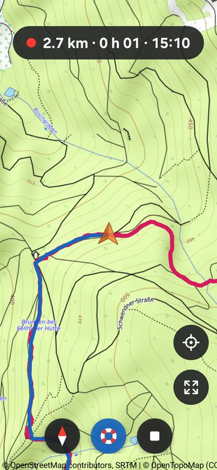
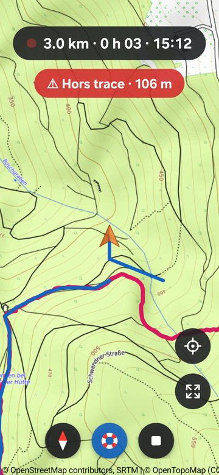
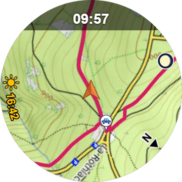
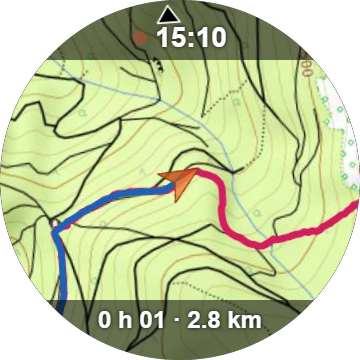
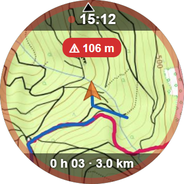

Ce que ça fait
Votre trace sur une carte de rando
Chargez la trace de votre randonnée. Une voiture marque le départ.
Rejoindre le départ
Un appui long sur la carte ouvre l'itinéraire dans Google Maps.
Ne jamais se perdre
La bouée vibre quand vous vous écartez de la trace.
Enregistrer votre rando
Gardez la trace que vous avez parcourue, et partagez-la.
Sur votre montre
La carte, votre position, le nord, le soleil avec l'heure du coucher et la lune, le téléphone restant dans la poche.
La carte est OpenTopoMap, une carte de randonnée qui couvre la France, l'Allemagne et le reste du monde.
Captures d'écran








Pour commencer
Installer sur le téléphone
- Sur le téléphone, touchez Télécharger pour Android.
- Ouvrez le fichier téléchargé et touchez Installer. Si Android ou Play Protect le demande, autorisez-le.
- Quand BLRando demande votre position, choisissez Toujours autoriser.
Mises à jour : quand une nouvelle version sort, BLRando la propose à l'ouverture. Touchez Mettre à jour.
Connecter la montre (facultatif)
- Sur le téléphone, activez le point d'accès mobile, réglé sur 2,4 GHz. Pas besoin de réseau mobile.
- Connectez la montre à ce point d'accès (paramètres de la montre > Connexions > Wi-Fi).
- Dans BLRando, touchez l'heure en haut : elle affiche une adresse comme
10.1.2.3:8765. - Sur la montre, ouvrez le navigateur (Internet sur les montres Samsung), tapez cette adresse, ajoutez-la aux favoris, puis touchez Ouvrir la carte.
Les fois suivantes : point d'accès activé, BLRando ouvert, puis ouvrez le favori sur la montre. Il faut une montre avec un navigateur web et le Wi-Fi : les montres Samsung avec leur navigateur Internet (testé sur la Galaxy Watch de 2018), ou les montres Wear OS avec un navigateur installé depuis leur Play Store. Un deuxième téléphone ou une tablette fonctionne aussi. Les Apple Watch, Garmin et Fitbit n'ont pas de navigateur web.
Les boutons
D'autres astuces (retirer une trace, alertes, deux montres…) : utilisation avancée, en anglais.
Votre vie privée
BLRando n'a pas de compte et ne collecte rien sur vous. Le téléphone ne parle à la montre que par son propre point d'accès, jamais sur un Wi-Fi partagé.